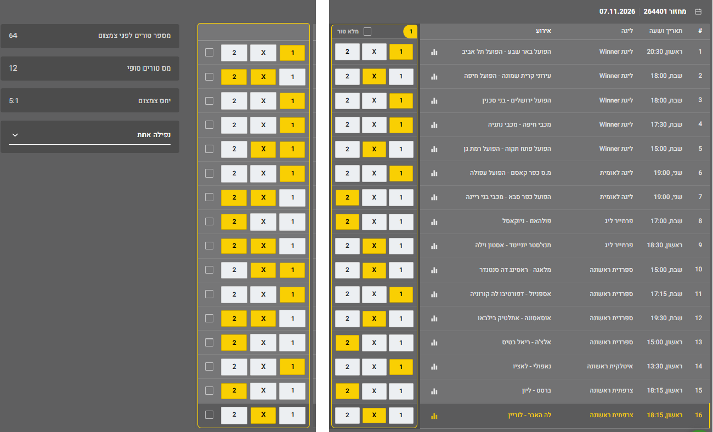

משחק 1
הפועל באר שבע - הפועל תל אביב
באר שבע בדרך כלל חזקה משמעותית בבית ומחזיקה בסגל עמוק ואיכותי יותר. הפועל ת"א נוטה להתקשות מול קבוצות הצמרת, במיוחד במשחקי חוץ. פערי האיכות והמומנטום נוטים בבירור לצד המקומיים.
ההמלצה : 1
משחק 2
עירוני קרית שמונה - הפועל חיפה
זהו משחק שקול יחסית בין שתי קבוצות שממעטות להכריע משחקים בקלות. הפועל חיפה נראית מעט יציבה יותר, אך לקרית שמונה יש יתרון ביתיות. הסבירות לתיקו גבוהה ולכן כדאי גיבוי.
ההמלצה : X2
משחק 3
הפועל ירושלים - בני סכנין
הפועל ירושלים נחשבת לקבוצה ביתית עיקשת מאוד. בני סכנין מתקשה לעיתים לייצר שערים במשחקי חוץ. אם ירושלים תכתיב את הקצב, הסיכוי שלה להשיג ניצחון גבוה יחסית.
ההמלצה : 1
משחק 4
מכבי חיפה - מכבי נתניה
מכבי חיפה חזקה משמעותית בסמי עופר ומחזיקה ביתרון איכות כמעט בכל עמדה. נתניה מסוגלת להיות מסוכנת, אך לאורך 90 דקות קשה לראות אותה שולטת במשחק כזה.
ההמלצה : 1
משחק 5
הפועל פתח תקוה - הפועל רמת גן
משחק טיפוסי של הליגה הלאומית שבו ההפרשים קטנים מאוד. פתח תקוה נהנית מיתרון מגרש ביתי, אך רמת גן קבוצה מספיק איכותית כדי לחלץ נקודות.
ההמלצה : 1X
משחק 6
מ.ס כפר קאסם - הפועל עפולה
כפר קאסם בדרך כלל מציגה יכולת טובה יותר בביתה. עפולה מתקשה לא פעם במשחקי חוץ מול יריבות מאורגנות. יתרון הביתיות צפוי להיות גורם משמעותי.
ההמלצה : 1
משחק 7
הפועל כפר סבא - מכבי בני ריינה
ריינה נראית איכותית ומאוזנת יותר על הנייר. מנגד, כפר סבא מסוגלת לסחוט תיקו במשחקים צמודים ולכן לא כדאי לסמן כאן ניצחון חוץ בודד.
ההמלצה : X2
משחק 8
פולהאם - ניוקאסל
ניוקאסל מחזיקה סגל עמוק יותר ועוצמה התקפית גבוהה. פולהאם בבית תמיד מסוכנת ולכן המשחק לא חד צדדי, אך האורחים מגיעים עם יתרון איכות ברור.
ההמלצה : 2
משחק 9
מנצ'סטר יונייטד - אסטון וילה
זה אחד המשחקים המסוכנים ביותר במחזור. יונייטד אמנם מארחת, אך וילה הוכיחה בשנים האחרונות שהיא מסוגלת להתמודד מול כל קבוצה באנגליה. התיקו או ניצחון וילה נראים מכוסים היטב בכפול.
ההמלצה : X2
משחק 10
מלאגה - ראסינג סנטנדר
שתי קבוצות שנוטות להיות תחרותיות מאוד ולקיים משחקים צמודים. למלאגה יתרון ביתיות, אך סנטנדר מסוגלת לצאת עם נקודות. לכן כדאי להימנע מהכרעה חד משמעית.
ההמלצה : 1X
משחק 11
אספניול - דפורטיבו לה קורוניה
אספניול בדרך כלל חזקה יותר בביתה ומציגה איכות גבוהה יותר. דפורטיבו מסוגלת להקשות, אך לאורך זמן היתרון של המארחת בולט.
ההמלצה : 1
משחק 12
אוסאסונה - אתלטיק בילבאו
מדובר במפגש מסורתי קשה מאוד לחיזוי. בילבאו איכותית יותר, אך אוסאסונה במגרשה הביתי מסוגלת לקחת נקודות מול כל יריבה. התיקו הוא תוצאה ריאלית מאוד.
ההמלצה : X2
משחק 13
אלצ'ה - ריאל בטיס
בטיס מחזיקה יותר איכות וניסיון במשחקים מהסוג הזה. אלצ'ה בבית יכולה להיות עיקשת, אך אם בטיס תציג את יכולתה הרגילה היא אמורה לנצח.
ההמלצה : 2
משחק 14
נאפולי - לאציו
נאפולי היא אחת מקבוצות הבית החזקות באיטליה ומגיעה בדרך כלל עם יתרון משמעותי במפגשים כאלה. לאציו מסוכנת, אך האיכות והעומק של נאפולי מעניקים לה יתרון.
ההמלצה : 1
משחק 15
ברסט - ליון
זהו אחד המשחקים שבהם אני פחות בטוח. ליון בעלת פוטנציאל גבוה יותר ואיכות אישית עדיפה, אך ברסט בבית היא יריבה לא פשוטה. למרות הסיכון, הכיוון הוא ניצחון חוץ.
ההמלצה : 2
משחק 16
לה האבר - לוריין
זה נראה כמו משחק תחתית קלאסי שבו שתי הקבוצות ירצו קודם לא להפסיד. משחקים כאלה מסתיימים לא פעם בחלוקת נקודות, אך יתרון הביתיות מעניק ללה האבר סיכוי קל לניצחון.
ההמלצה : 1X

אהבתם? אל תפספסו את הבא!
⟵
🔔 Subscribe
🔔 להצטרפות
⟶